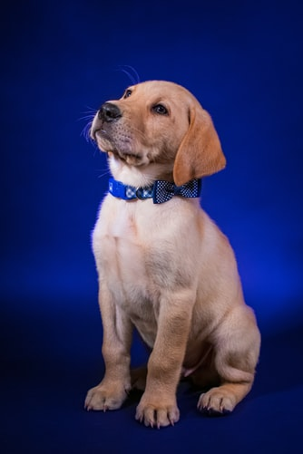
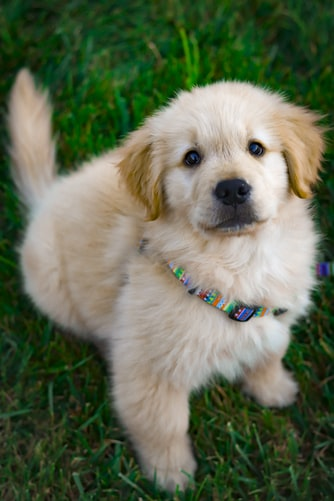
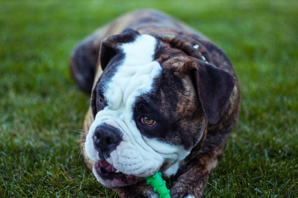

The American Kennel Club reconizes 195 different dog breeds. There are also about 79 more breeds that are working for full recognition.
The Labrador Retriever, often abbreviated to Labrador or Lab, is a medium-large gun dog from the United Kingdom that was developed from imported Canadian fishing dogs. The Labrador is one of the most popular dog breeds in a number of countries in the world, particularly in the Western world. Life expectancy is 10-12 years.
The French Bulldog is a breed of domestic dog, bred to be companion dogs. The breed is the result of a cross between Toy Bulldogs imported from England, and local ratters in Paris, France, in the 1800s. They are stocky, compact dogs with a friendly, mild-mannered temperament. Life expectancy is 10-14 years.

The German Shepherd is a breed of medium to large-sized working dog that originated in Germany. According to the FCI, the breed's English language name is German Shepherd Dog. Life expectancy is 9-13 years.

The Golden Retriever is a medium-large gun dog that was bred to retrieve shot waterfowl, such as ducks and upland game birds, during hunting and shooting parties. The name "retriever" refers to the breed's ability to retrieve shot game undamaged due to their soft mouth. Life expectancyis 10-12 years.

The Bulldog, also known as the English Bulldog or British Bulldog, is a medium-sized dog breed. It is a muscular, hefty dog with a wrinkled face and a distinctive pushed-in nose. The Kennel Club, the American Kennel Club, and the United Kennel Club oversee breeding records. Life expectancy is 8-10 years.
Although some people may have different opinions (we all have our own), here are a few reason you should consider getting one of these awesome dogs:
--If this isn't enough to convince you then watch this video--